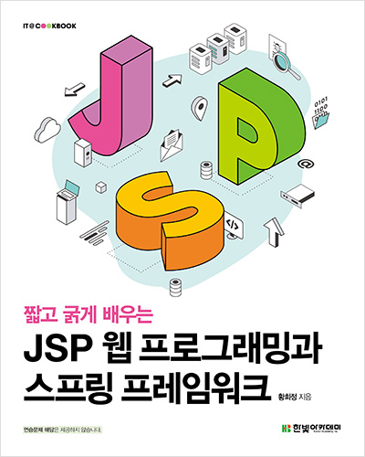
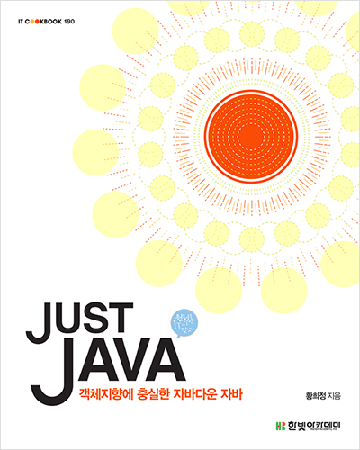
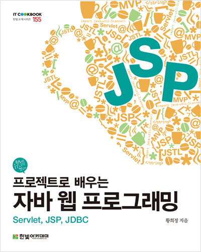
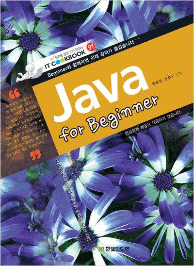
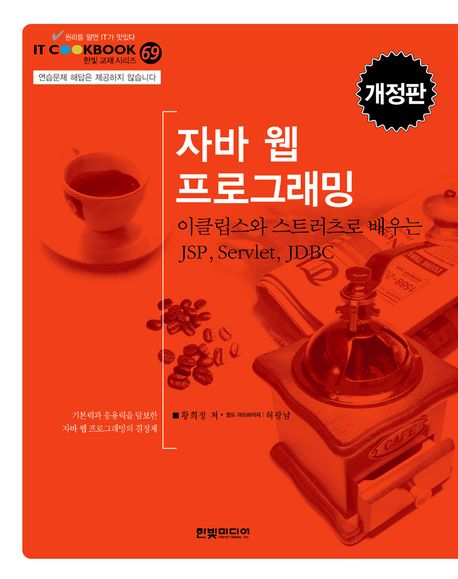
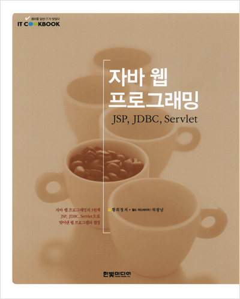
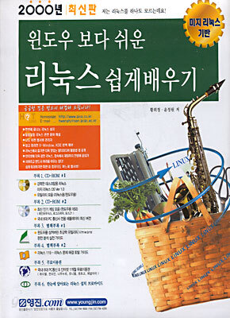
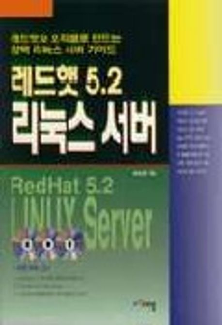

IT CookBook, 짧고 굵게 배우는 JSP 웹 프로그래밍과 스프링 프레임워크
발행처: 한빛 아카데미
발행일자: 2021.08.09
ISBN: 9791156645573

Software Engineering
Ph.D., Professor
Department of Computer Engineering
대규모 소프트웨어 아키텍처, AI 기반 개발 생산성, High-efficiency LLM Serving, OHDEP(Open Health Data Exchange Platform) 등을 연구합니다. 산업체와 협업하여 실제 배포 환경에서 검증 가능한 소프트웨어 엔지니어링 방법론 및 플랫폼 개발을 진행해 왔습니다.
황희정 교수는 1995년 (주)넥스텔 뉴미디어연구소에서 국내 최초의 민간 부분 인터넷 서비스 시작에서 부터
삼성그룹, 금호 아시아나그룹의 전사 웹 시스템 개발, 삼성전자 포토줌 개발, 대한 체육회 웹 스포츠 DB개발 등 다양한 대형 프로젝트에서 개발 PM을 담당했으며
객체지향, 미들웨어, 분산객체 분야의 소프트웨어 엔지니어링 전문가로서 활동해 왔습니다.
인하대학교에서 컴퓨터공학 석사, 인천대학교에서 박사 학위를 취득했으며, 2000년부터 가천대학교 컴퓨터공학과 교수로 재직 중입니다.
| 번호 | 제목 | 분류 | 작성일 |
|---|---|---|---|
| 0 | 삼성SDS Associate Architec 사내프로그램 컨설팅 | 컨설팅 | 2026-01-20 |
| 1 | (주)에이아이젬 공동 연구실 개설 및 기부식 | 산학협력 | 2023-03-22 |
| 2 | 특허 기술 이전 - (주)카이아이 | 기술이전 | 2024-01-30 |
| 3 | OHDEP 소개자료 | 기술소개 | 2022-12-05 |
| 4 | (주)나연테크 기술이전 | 기술이전 | 2023-11-16 |
| 5 | 소프트랜더스(주) 서비스 플랫폼 자문 | 컨설팅 | 2021-11-04 |
| 번호 | 구분 | 논문명 | 학술지명 | 논문제목 | 게재년월일 |
|---|---|---|---|---|---|
| 1 | KCI | 한국정보기술학회논문지 | 한국정보기술학회 | 의료정보 연동 AI 에이전트를 위한 MCP-FHIR 서버 아키텍처 | 2025-09 |
| 2 | KCI | 한국정보기술학회논문지 | 한국정보기술학회 | 스마트 의료용 베드의 통합 관리를 위한 인터페이스 시스템 설계 및 구현 | 2024-04 |
| 3 | KCI | 한국정보기술학회논문지 | 한국정보기술학회 | Optimizing DenseNet for Image Classification: A Synergy of Dual-Adaptive Attention and Multi-Scale Feature Extraction | 2024-04 |
| 4 | KCI | 한국정보기술학회논문지 | 한국정보기술학회 | 플라스틱 원료 혼합기의 자동 보정 소프트웨어를 위한 머신러닝 예측 모델 | 2023-07 |
| 5 | SCIE | ELECTRONICS | MDPI | VGG-C Transform Model with Batch Normalization to Predict Alzheimer's Disease through MRI Dataset | 2022-07 |
| 6 | KCI | 멀티미디어학회논문지 | 한국멀티미디어학회 | 하이퍼레저 패브릭과 비대칭키 암호화 기술을 결합한 건강정보 관리서버 | 2022-05 |
| 7 | KCI | 융복합지식학회논문지 | 융복합지식학회 | 멀티채널 데이터 방송을 이용한 CCR 기반 헬스케어 서비스 설계와 구현 | 2021-08 |
| 8 | KCI | 멀티미디어학회논문지 | 한국멀티미디어학회 | 개인 건강 정보 처리를 위한 배치 어플리케이션에서 데이터 질의 속도 향상을 위한 PHDItemReader 설계 및 구현 | 2020-09 |
| 9 | KCI | The International Journal of Internet, Broadcasting and Communication | 한국인터넷방송통신학회 | Design of Remote Management System for Smart Factory | 2020-08 |
| 10 | KCI | 멀티미디어학회논문지 | 한국멀티미디어학 | 개인 건강 정보 관리를 위한 통합 리파지토리 및 웹 기반 대시보드 UI 컴포넌트 설계 및 구현 | 2019-10 |
| 11 | KCI | 멀티미디어학회논문지 | 한국멀티미디어학 | 스마트 팩토리에서 원격 실시간 모니터링을 위한 게이트웨이 인터페이스 연동 API 설계 및 구현 | 2019-04 |
| 12 | KCI | 멀티미디어학회논문지 | 한국멀티미디어학회 | HL7 FHIR 기반 의료 데이터 처리 시스템에서 YCSB를 통한 RDBMS와 MongoDB의 성능 분석 연구 | 2018-07 |
| 13 | SCIE | JOURNAL OF MEDICAL IMAGING AND HEALTH INFORMATICS | AMER SCIENTIFIC PUBLISHERS | Energy-Efficient Data Access Using Spatial Index in the Wireless Data Broadcast for Location-Dependent Healthcare Services | 2017-03 |
| 14 | SCIE | IEICE TRANSACTIONS ON FUNDAMENTALS OF ELECTRONICS COMMUNICATIONS AND COMPUTER SCIENCES | IEICE-INST ELECTRONICS INFORMATION COMMUNICATIONS ENG | Quick Window Query Processing Using a Non-Uniform Cell-Based Index in Wireless Data Broadcast Environment | 2016-09 |
| 15 | SCIE | IEICE TRANSACTIONS ON INFORMATION AND SYSTEMS | IEICE-INST ELECTRONICS INFORMATION COMMUNICATIONS ENG | An Index Based on Irregular Identifier Space Partition for Quick Multiple Data Access in Wireless Data Broadcasting | 2016-04 |
| 16 | KCI | 한국정보기술학회논문지 | 한국정보기술학회 | 표준 기반 헬스케어 플랫폼과의 개인 건강 데이터 공유를 위한 모바일 프레임워크 설계 | 2016-06 |
| 17 | KCI | 한국인터넷방송통신학회 논문지 | 한국인터넷방송통신학회 | 응급 상황 처리를 위한 안전한 개인건강기록 시스템 | 2016-05 |
| 18 | KCI | 한국인터넷방송통신학회 논문지 | 한국인터넷방송통신학회 | TOS와 Mobile device 간의 펍섭 QoS를 지원하는 대량 커넥션 서비스 브로커 설계 | 2016-05 |
| 19 | KCI | 한국인터넷방송통신학회 논문지 | 한국인터넷방송통신학회 | 개인 건강 라이프로그 서비스에서 보안 참조 모델에 관한 연구 | 2016-06 |
| 20 | KCI | 한국인터넷방송통신학회 논문지 | 한국인터넷방송통신학회 | 개인화된 건강 자원 조회를 위한 TOS 와 HL7 FHIR 서비스간의 데이터그리드 모델 설계 | 2016-05 |

발행처: 한빛 아카데미
발행일자: 2021.08.09
ISBN: 9791156645573

발행처: 한빛아카데미
발행일자: 2015.10.26
ISBN: 9791156642015

발행처: 한빛아카데미
발행일자: 2014.01.02
ISBN: 9788998756680

발행처: 한빛미디어
발행일자: 2008.12.22
ISBN: 978-89-7914-599-1

발행처: 한빛미디어
발행일자: 2007.07.30
ISBN: 978-89-7914-498-7

발행처: 한빛미디어
발행일자: 2003.06.30
ISBN: 89-7914-239-0

발행처: 영진닷컴
발행일자: 2000.02.10
ISBN: 89-314-1357-2

발행처: 대청미디어
발행일자: 1999.04.15
ISBN: 89-87939-17-0
발행처: 대청
발행일자: 1997.03.05
ISBN: 89-86475-18-9
| 번호 | 구분 | 지식재산권명 | 등록(출원)번호 |
|---|---|---|---|
| 1 | 특허 | 허가형 블록체인 기술을 이용한 건강정보관리방법 | 10-2480890-0000 |
| 2 | 특허 | 허가형 블록체인 기술을 이용한 건강정보의 저장 및 거래방법 | 10-2463073-0000 |
| 3 | 특허 | 긴급도를 고려한 멀티채널에서의 CCR문서 수신 방법 및 시스템 | 10-2457321-0000 |
| 4 | 특허 | 긴급도를 고려한 멀티채널에서의 CCR문서 브로드캐스팅 방법 및 시스템 | 10-2457320-0000 |
| 5 | 특허 | 모바일 헬스 데이터의 의료기관 중계 시스템(RELAY SYSTEM FOR MEDICAL INST.) | 10-1966752-0000 |
| 6 | 특허 | 개인화된 건강 데이터 중계 시스템 및 방법 | 10-1865073-0000 |
| 7 | 특허 | XML 기반의 의료 정보를 무선 채널에 송신하는 서버 및 클라이언트 | 10-1685465-0000 |
| 8 | 소프트웨어 | 헬스케어 플랫폼 대시보드 UI 구성 모듈 | C-2021-055860 |
| 9 | 소프트웨어 | 헬스케어 플랫폼 데이터 전송 API 모듈 | C-2021-055859 |
| 10 | 소프트웨어 | 건강관리 서비스 플랫폼 데이터 형식 변환기 | C-2021-055858 |
| 11 | 소프트웨어 | 무인 운전 시스템을 위한 보행자 탐지 모듈 | C-2020-027420 |
| 12 | 소프트웨어 | 대용량 헬스케어 데이터의 통계를 위한 배치 처리 모듈 | C-2020-027419 |
| 번호 | 수상명 | 수여기관 | 수여년도 |
|---|---|---|---|
| 1 | SW산업발전 국가 유공 표창 | 지식경제부 장관 | 2009 |
| 2 | 장은기술상 | 장기신용은행 | 1997 |
| 3 | 우수연구상 | 가천대학교 | 2011 |
| 4 | 우수교육자상 | 가천대학교 | 2011 |